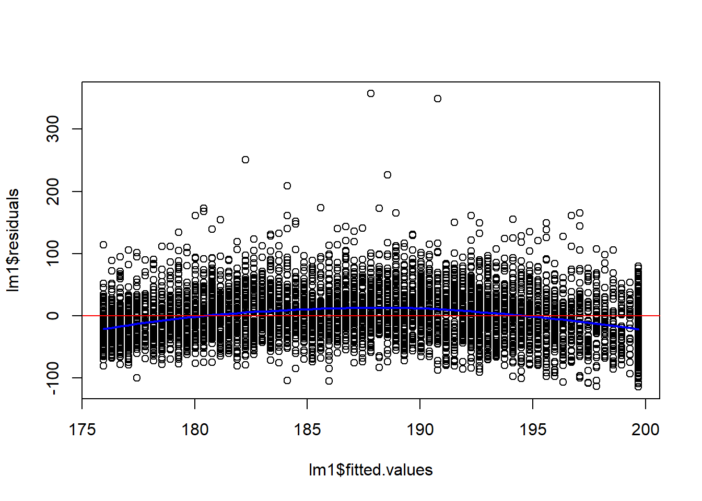

nhanesDataPath = ""
load("d4.rda")
load("metaD.rda")
DT::datatable(metaD)Week 7: Advanced Regression
This week we’ll take a deeper look at regression models using a different NHANES dataset.
Load the data
There are 6063 observations, some are incomplete and have missing values for some covariates. There are 22 covariates, which have cryptic names and you need to use the meta-data to resolve them. The survey is very complex and typically any analysis requires a substantial amount of reading of the documentation. Here we will guide you past some of the hurdles.
We load up the data and the metadata. In the metadata we have a textual description of the phenotype, the short name, and the target. The target tells us which of the sampled individuals was eligible to answer the question.
We will look at the relationship between the variable LBXTC (which is Total Cholesterol in mg/dL measured by a blood draw) and the age of the participant in years.

And we can see that in this plot, over-plotting is a substantial issue here. You might also notice what seems like a lot of data at age 80, this is because any age over 80 was truncated to 80 to prevent reidentification of survey participants. In a complete analysis, this should probably be adjusted for in some way, but we will ignore it for now.
We can try some other methods, such as hexbin plotting and smoothScatter to get a better idea of the distribution of the data.
Now we can see a few outliers - with extremely high serum cholesterol. We get a sense that the trend is not exactly a straight line, but rather a parabola, lower for the young and the old and a bit higher in the middle.
We fit a linear model first.
lm1 = lm(d4$LBXTC ~ d4$RIDAGEYR)
summary(lm1)
Call:
lm(formula = d4$LBXTC ~ d4$RIDAGEYR)
Residuals:
Min 1Q Median 3Q Max
-114.68 -27.95 -2.91 23.34 357.19
Coefficients:
Estimate Std. Error t value Pr(>|t|)
(Intercept) 170.0140 1.4340 118.56 <2e-16 ***
d4$RIDAGEYR 0.3708 0.0285 13.01 <2e-16 ***
---
Signif. codes: 0 '***' 0.001 '**' 0.01 '*' 0.05 '.' 0.1 ' ' 1
Residual standard error: 41.24 on 5689 degrees of freedom
(372 observations deleted due to missingness)
Multiple R-squared: 0.02891, Adjusted R-squared: 0.02874
F-statistic: 169.4 on 1 and 5689 DF, p-value: < 2.2e-16plot(lm1$fitted.values, lm1$residuals)
##fit a loess curve
l2 = loess(lm1$residuals ~ lm1$fitted.values)
pl = predict(l2, newdata=sort(lm1$fitted.values))
lines(x=sort(lm1$fitted.values), y=pl, col="blue", lwd=2)
abline(h=0, col="red")
Notice that both terms in the model are very significant, but that the multiple \(R^2\) is only around 2%.
So age, in years, is not explaining very much of the variation. But because we have such a large data set, the parameter estimates are found to be significantly different from zero.
Spline Models
When a linear model does not appear sufficient we can try other models. One choice is to use natural splines, which are very flexible. They create a “knotted” line, where at each knot the slope of the line can change. They are based on B-splines with the prevision that the model is linear outside the range of the data.
However, we have to decide the number of knots we want to use in the model. Based on the initial analysis, we chose to use df=7, which gives five internal knots when fitting the splines. You have almost 6,000 degrees of freedom here, so using up a few to get a more appropriate fit seems good.
library("splines")
lm2 = lm(d4$LBXTC ~ ns(d4$RIDAGEYR, df=7))
summary(lm2)
Call:
lm(formula = d4$LBXTC ~ ns(d4$RIDAGEYR, df = 7))
Residuals:
Min 1Q Median 3Q Max
-113.43 -26.32 -2.88 22.47 343.31
Coefficients:
Estimate Std. Error t value Pr(>|t|)
(Intercept) 154.799 2.178 71.071 < 2e-16 ***
ns(d4$RIDAGEYR, df = 7)1 39.956 3.379 11.826 < 2e-16 ***
ns(d4$RIDAGEYR, df = 7)2 32.705 4.074 8.028 1.20e-15 ***
ns(d4$RIDAGEYR, df = 7)3 55.583 3.637 15.283 < 2e-16 ***
ns(d4$RIDAGEYR, df = 7)4 42.275 3.725 11.347 < 2e-16 ***
ns(d4$RIDAGEYR, df = 7)5 30.111 3.352 8.984 < 2e-16 ***
ns(d4$RIDAGEYR, df = 7)6 41.098 5.758 7.137 1.07e-12 ***
ns(d4$RIDAGEYR, df = 7)7 15.992 2.478 6.453 1.19e-10 ***
---
Signif. codes: 0 '***' 0.001 '**' 0.01 '*' 0.05 '.' 0.1 ' ' 1
Residual standard error: 39.62 on 5683 degrees of freedom
(372 observations deleted due to missingness)
Multiple R-squared: 0.1044, Adjusted R-squared: 0.1033
F-statistic: 94.65 on 7 and 5683 DF, p-value: < 2.2e-16We can use an anova to compare the models.
anova(lm1, lm2)Analysis of Variance Table
Model 1: d4$LBXTC ~ d4$RIDAGEYR
Model 2: d4$LBXTC ~ ns(d4$RIDAGEYR, df = 7)
Res.Df RSS Df Sum of Sq F Pr(>F)
1 5689 9674185
2 5683 8922039 6 752146 79.848 < 2.2e-16 ***
---
Signif. codes: 0 '***' 0.001 '**' 0.01 '*' 0.05 '.' 0.1 ' ' 1Notice also that the multiple \(R^2\) went up to about 10%, a pretty substantial increase, suggesting that the curvilinear nature of the relationship is substantial.
The residual standard error also decreased by about 5%.
We have lost the simple explanation that comes from fitting a linear model. We cannot say that your serum cholesterol increases by \(a\) units per year, but that model was wrong, so it really shouldn’t be used.
We can use the regression model we fit to make predictions for any one, and these are substantially more accurate.
Spline Models
Even though the regression summary prints out a different row for each spline term, they are not independent variables, and you need to either retain them all, or retain none of them.
Sex
Next we might want to start to add other variables and explore the different relationships. Let’s consider sex, for now we will leave out age, and just try to understand what happens with sex First let’s fit the model without an intercept
lm3 = lm(LBXTC ~ RIAGENDR-1, data=d4)
summary(lm3)
Call:
lm(formula = LBXTC ~ RIAGENDR - 1, data = d4)
Residuals:
Min 1Q Median 3Q Max
-107.55 -29.55 -3.55 24.21 360.45
Coefficients:
Estimate Std. Error t value Pr(>|t|)
RIAGENDRMale 184.5534 0.7974 231.4 <2e-16 ***
RIAGENDRFemale 189.7914 0.7692 246.7 <2e-16 ***
---
Signif. codes: 0 '***' 0.001 '**' 0.01 '*' 0.05 '.' 0.1 ' ' 1
Residual standard error: 41.76 on 5689 degrees of freedom
(372 observations deleted due to missingness)
Multiple R-squared: 0.9526, Adjusted R-squared: 0.9526
F-statistic: 5.722e+04 on 2 and 5689 DF, p-value: < 2.2e-16Here we can see the mean for males is a bit higher than for females Both are significant, and notice how large the multiple \(R^2\) value is. This is not a very interesting test - we are asking if the mean is zero, which isn’t even physically possible: \[ y_i = \beta_M \cdot 1_{M,i} + \beta_F \cdot 1_{F,i} \] Where \(1_{M,i}\) is 1 if the \(i^{th}\) case is male and zero otherwise, similarly for \(1_{F,i}\) Instead let’s use a model with an intercept to ask if the mean for males is different than that for females. \[ y_i = \beta_0 + \beta_1 \cdot 1_{F,i} \]
This way, \(E[Y|M] = \beta_0\) and \(E[Y|F] = \beta_0 + \beta_1\), and \(\beta_1\) estimates the difference in mean between male and female
lm3 = lm(LBXTC ~ RIAGENDR, data=d4)
summary(lm3)
Call:
lm(formula = LBXTC ~ RIAGENDR, data = d4)
Residuals:
Min 1Q Median 3Q Max
-107.55 -29.55 -3.55 24.21 360.45
Coefficients:
Estimate Std. Error t value Pr(>|t|)
(Intercept) 184.5534 0.7974 231.434 < 2e-16 ***
RIAGENDRFemale 5.2380 1.1080 4.728 2.33e-06 ***
---
Signif. codes: 0 '***' 0.001 '**' 0.01 '*' 0.05 '.' 0.1 ' ' 1
Residual standard error: 41.76 on 5689 degrees of freedom
(372 observations deleted due to missingness)
Multiple R-squared: 0.003913, Adjusted R-squared: 0.003738
F-statistic: 22.35 on 1 and 5689 DF, p-value: 2.327e-06Now we see an Intercept term, which is the overall mean. The estimate for females represents how they differ by sex, if it is zero then there is no difference in total cholesterol between men and women.
Looking at more variables
Now we will put together a set of features (variables) that we are interested in. For simplicity we only keep participants for which we have all the data. Here, we use apply, which apply a function to each row in the dataset. We also could have used the tidyverse functions for handling missing data which we’ve seen previously.
ivars = c("RIDAGEYR", "RIAGENDR", "RIDRETH1", "DMDEDUC2", "INDFMPIR", "LBDHDD", "LBXGH", "BMXBMI", "LBXTC")
d4sub = d4[,ivars]
compCases = apply(d4sub, 1, function(x) sum(is.na(x)))
cC = compCases==0
d4sub = d4sub[cC,]
dim(d4sub)[1] 4592 9One quick transformation
The variable DMDEDUC2 is a bit too granular for our purposes. Let’s modify it to be less than high school, high school and more than high school
table(d4sub$DMDEDUC2)
Less than 9th grade
523
9-11th grade (Includes 12th grade with no diploma)
506
High school graduate/GED or equivalent
1007
Some college or AA degree
1391
College graduate or above
1164
Don't Know
1 dd = d4sub$DMDEDUC2
dd[dd=="Don't Know"] = NA
eduS = ifelse(dd == "Less than 9th grade" | dd =="9-11th grade (Includes 12th grade with no diploma)", "<HS", ifelse(dd == "High school graduate/GED or equivalent", "HS", ">HS" ))
#stick this into our dataframe
#and drop the NA
d4sub$eduS = eduS
d4sub = d4sub[-which(is.na(eduS)), ]
table(eduS, dd, useNA = "always") dd
eduS Less than 9th grade 9-11th grade (Includes 12th grade with no diploma)
<HS 523 506
>HS 0 0
HS 0 0
<NA> 0 0
dd
eduS High school graduate/GED or equivalent Some college or AA degree
<HS 0 0
>HS 0 1391
HS 1007 0
<NA> 0 0
dd
eduS College graduate or above Don't Know <NA>
<HS 0 0 0
>HS 1164 0 0
HS 0 0 0
<NA> 0 0 1Back to Regression
Let’s run a regression including all of our variables on cholesterol. We can do this by just indicating . in the formula.
lmF = lm(LBXTC ~ ., data=d4sub)
summary(lmF)
Call:
lm(formula = LBXTC ~ ., data = d4sub)
Residuals:
Min 1Q Median 3Q Max
-123.19 -27.68 -3.40 22.41 362.93
Coefficients: (2 not defined because of singularities)
Estimate Std. Error
(Intercept) 139.06987 5.34623
RIDAGEYR 0.11231 0.03739
RIAGENDRFemale 0.99071 1.29161
RIDRETH1Other Hispanic -2.41290 2.23553
RIDRETH1Non-Hispanic White -1.86248 1.94109
RIDRETH1Non-Hispanic Black -8.60649 2.07247
RIDRETH1Other Race - Including Multi-Racial 1.79765 2.26131
DMDEDUC29-11th grade (Includes 12th grade with no diploma) 1.95438 2.59288
DMDEDUC2High school graduate/GED or equivalent 2.09692 2.32957
DMDEDUC2Some college or AA degree 2.23659 2.30162
DMDEDUC2College graduate or above -1.09357 2.50664
INDFMPIR 1.13163 0.43699
LBDHDD 0.42540 0.03907
LBXGH 2.52364 0.55377
BMXBMI 0.21048 0.09372
eduS>HS NA NA
eduSHS NA NA
t value Pr(>|t|)
(Intercept) 26.013 < 2e-16 ***
RIDAGEYR 3.003 0.00268 **
RIAGENDRFemale 0.767 0.44310
RIDRETH1Other Hispanic -1.079 0.28049
RIDRETH1Non-Hispanic White -0.960 0.33736
RIDRETH1Non-Hispanic Black -4.153 3.34e-05 ***
RIDRETH1Other Race - Including Multi-Racial 0.795 0.42668
DMDEDUC29-11th grade (Includes 12th grade with no diploma) 0.754 0.45104
DMDEDUC2High school graduate/GED or equivalent 0.900 0.36810
DMDEDUC2Some college or AA degree 0.972 0.33123
DMDEDUC2College graduate or above -0.436 0.66266
INDFMPIR 2.590 0.00964 **
LBDHDD 10.890 < 2e-16 ***
LBXGH 4.557 5.32e-06 ***
BMXBMI 2.246 0.02477 *
eduS>HS NA NA
eduSHS NA NA
---
Signif. codes: 0 '***' 0.001 '**' 0.01 '*' 0.05 '.' 0.1 ' ' 1
Residual standard error: 40.72 on 4576 degrees of freedom
Multiple R-squared: 0.04276, Adjusted R-squared: 0.03983
F-statistic: 14.6 on 14 and 4576 DF, p-value: < 2.2e-16We see that being Non-hispanic black seems to have a pretty big effect, so we might want to just include that, and group all other ethnicities together. Education level seems to have little to add, let’s drop it to simplify the analysis. It might be good to get a sense of the relationship with the poverty level variable INDFMPIR.
Black = ifelse(d4sub$RIDRETH1 == "Non-Hispanic Black", "B", "nonB")
ivars = c("RIDAGEYR", "INDFMPIR", "LBDHDD", "LBXGH", "BMXBMI", "LBXTC")
d5sub = cbind(d4sub[,ivars], Black)
lmFx = lm(LBXTC ~ . , data=d5sub)
summary(lmFx)
Call:
lm(formula = LBXTC ~ ., data = d5sub)
Residuals:
Min 1Q Median 3Q Max
-123.65 -27.94 -3.45 22.47 360.06
Coefficients:
Estimate Std. Error t value Pr(>|t|)
(Intercept) 132.78645 5.19610 25.555 < 2e-16 ***
RIDAGEYR 0.09909 0.03618 2.739 0.00619 **
INDFMPIR 0.86401 0.38147 2.265 0.02356 *
LBDHDD 0.43038 0.03662 11.753 < 2e-16 ***
LBXGH 2.60260 0.54925 4.738 2.22e-06 ***
BMXBMI 0.21216 0.09002 2.357 0.01848 *
BlacknonB 7.49101 1.52918 4.899 9.98e-07 ***
---
Signif. codes: 0 '***' 0.001 '**' 0.01 '*' 0.05 '.' 0.1 ' ' 1
Residual standard error: 40.73 on 4584 degrees of freedom
Multiple R-squared: 0.0408, Adjusted R-squared: 0.03955
F-statistic: 32.5 on 6 and 4584 DF, p-value: < 2.2e-16We can compare the two models using the anova function.
anova(lmFx, lmF) Exercise: Plot RIDAGEYR versus INDFMPIR. What do you see in the plot? Does anything cause you concern about fitting a linear model?
Missing Indicator Approach
The missing indicator approach may be useful for data where there is a limit of detection, so that values below some lower bound \(\alpha_L\) or above some upper bound \(\alpha_U\) are set to \(\alpha_L\) or to \(\alpha_U\) respectively. A similar approach can be used for the Windsorization used for RIDAGEYR variable, where values over 80 are set to 80. We are not proposing using this for other types of missingness, although there is a righ literature and users may want to explore the broader use of this method. However, it is important to realize that often bias or increased variance may obtain, often dependent on untestable assumptions.
The reason that we believe this approach is appropriate for the cases listed is that we actually did measure the variable, and many over variables on those individuals, but we cannot report the exact value for any individual. Hence, one can interpret the indicator as being some form of average over all individuals affected by the reporting limits. It is probably worth noting that these limitations have implications for predication methods. While one in principle could estimate some outcome for an 88 year old person, the data won’t support that prediction. Instead one should ignore the linear predictor for age and use the indicator variable. Chiou et al (https://www.ncbi.nlm.nih.gov/pmc/articles/PMC6812630/) provide some rationale for logistic regression and the references therein point to results for linear regression. Groenwold et al (https://www.ncbi.nlm.nih.gov/pmc/articles/PMC3414599/) provide advice on more general use of the method to address missing data.
Next let’s try to fix out model to deal with the repeated values in these two variables. Now an important consideration is to try and assess just how to interpret them. For RIDAGEYR the documentation states that anyone over age 80 in the database has their age represented as 80. This is not censoring. The measurements (eg BMI, cholesterol etc.) were all made on a person of some age larger than 80. We just Windsorized their ages, and so these individuals really are not the same as the others, where we are getting accurate age values.
(https://www.ncbi.nlm.nih.gov/pmc/articles/PMC3414599/)
So basically what we want to do is to create a dummy variable for those whose age is reported as 80.
Age80 = d5sub$RIDAGEYR == 80
d6sub=cbind(d5sub, Age80)
lmFx2 = lm(LBXTC ~ . + Age80 , data=d6sub)
summary(lmFx2)
Call:
lm(formula = LBXTC ~ . + Age80, data = d6sub)
Residuals:
Min 1Q Median 3Q Max
-125.97 -28.09 -3.05 22.34 359.17
Coefficients:
Estimate Std. Error t value Pr(>|t|)
(Intercept) 130.95895 5.16754 25.343 < 2e-16 ***
RIDAGEYR 0.23581 0.03996 5.901 3.88e-09 ***
INDFMPIR 0.68993 0.37964 1.817 0.0692 .
LBDHDD 0.42924 0.03638 11.799 < 2e-16 ***
LBXGH 2.29476 0.54709 4.194 2.79e-05 ***
BMXBMI 0.15983 0.08969 1.782 0.0748 .
BlacknonB 7.78276 1.51968 5.121 3.16e-07 ***
Age80TRUE -22.72915 2.90328 -7.829 6.08e-15 ***
---
Signif. codes: 0 '***' 0.001 '**' 0.01 '*' 0.05 '.' 0.1 ' ' 1
Residual standard error: 40.46 on 4583 degrees of freedom
Multiple R-squared: 0.05346, Adjusted R-squared: 0.05201
F-statistic: 36.98 on 7 and 4583 DF, p-value: < 2.2e-16Exercise: What changes do you notice in the model fit? Use the anova function to compare lmFx3 to lmFx2. How do you interpret the output? Hint: look at INDFMPIR
Exercise: Try to fit missing indicator variables for both of the repeated values in the INDFMPIR variable. Then interpret the output.
Pov5 = d6sub$INDFMPIR == 5
Pov0 = d6sub$INDFMPIR == 0
d7sub = cbind(d6sub, Pov5, Pov0)
lmFx2 = lm(LBXTC ~ . + Age80 + Pov0 + Pov5, data=d7sub)
summary(lmFx2)
Call:
lm(formula = LBXTC ~ . + Age80 + Pov0 + Pov5, data = d7sub)
Residuals:
Min 1Q Median 3Q Max
-126.04 -28.11 -3.09 22.39 358.65
Coefficients:
Estimate Std. Error t value Pr(>|t|)
(Intercept) 131.44125 5.21065 25.226 < 2e-16 ***
RIDAGEYR 0.23419 0.04003 5.850 5.25e-09 ***
INDFMPIR 0.44100 0.54075 0.816 0.4148
LBDHDD 0.42898 0.03639 11.788 < 2e-16 ***
LBXGH 2.30525 0.54743 4.211 2.59e-05 ***
BMXBMI 0.15911 0.08977 1.773 0.0764 .
BlacknonB 7.76271 1.52024 5.106 3.42e-07 ***
Age80TRUE -22.67132 2.90734 -7.798 7.74e-15 ***
Pov5TRUE 1.35245 2.30269 0.587 0.5570
Pov0TRUE -3.09279 6.30631 -0.490 0.6239
---
Signif. codes: 0 '***' 0.001 '**' 0.01 '*' 0.05 '.' 0.1 ' ' 1
Residual standard error: 40.47 on 4581 degrees of freedom
Multiple R-squared: 0.05357, Adjusted R-squared: 0.05171
F-statistic: 28.81 on 9 and 4581 DF, p-value: < 2.2e-16It seems that some of the apparent effect of INDFMPIR seems to be related to the fact that we are not fitting RIDAGEYR properly.
lmFx3 = lm(LBXTC ~ ns(RIDAGEYR, df=7)+ INDFMPIR+ LBDHDD+LBXGH + BMXBMI + Black + Age80 + Pov0 + Pov5, data=d7sub)
summary(lmFx3)
Call:
lm(formula = LBXTC ~ ns(RIDAGEYR, df = 7) + INDFMPIR + LBDHDD +
LBXGH + BMXBMI + Black + Age80 + Pov0 + Pov5, data = d7sub)
Residuals:
Min 1Q Median 3Q Max
-109.14 -27.01 -3.55 22.15 350.63
Coefficients:
Estimate Std. Error t value Pr(>|t|)
(Intercept) 123.26835 5.74709 21.449 < 2e-16 ***
ns(RIDAGEYR, df = 7)1 29.34696 3.89739 7.530 6.08e-14 ***
ns(RIDAGEYR, df = 7)2 27.30104 5.01414 5.445 5.46e-08 ***
ns(RIDAGEYR, df = 7)3 44.63075 4.49373 9.932 < 2e-16 ***
ns(RIDAGEYR, df = 7)4 27.23653 4.71406 5.778 8.07e-09 ***
ns(RIDAGEYR, df = 7)5 14.25183 4.46425 3.192 0.001420 **
ns(RIDAGEYR, df = 7)6 30.51098 8.12103 3.757 0.000174 ***
ns(RIDAGEYR, df = 7)7 7.84477 5.21942 1.503 0.132909
INDFMPIR -0.07063 0.53106 -0.133 0.894207
LBDHDD 0.44469 0.03569 12.460 < 2e-16 ***
LBXGH 1.87930 0.53859 3.489 0.000489 ***
BMXBMI 0.06358 0.08824 0.721 0.471190
BlacknonB 8.23587 1.49119 5.523 3.52e-08 ***
Age80TRUE -7.16363 5.57718 -1.284 0.199048
Pov0TRUE -6.82759 6.18622 -1.104 0.269792
Pov5TRUE 0.45875 2.25604 0.203 0.838876
---
Signif. codes: 0 '***' 0.001 '**' 0.01 '*' 0.05 '.' 0.1 ' ' 1
Residual standard error: 39.62 on 4575 degrees of freedom
Multiple R-squared: 0.09415, Adjusted R-squared: 0.09118
F-statistic: 31.7 on 15 and 4575 DF, p-value: < 2.2e-16Exercise
In the code below, we drop the terms that were not statistically significant in the model and then compare this smaller model to the larger one, above. Try interpreting the results.
lmFx4 = lm(LBXTC ~ ns(RIDAGEYR, df=7) + LBDHDD+LBXGH+Black, data=d7sub)
summary(lmFx4)
Call:
lm(formula = LBXTC ~ ns(RIDAGEYR, df = 7) + LBDHDD + LBXGH +
Black, data = d7sub)
Residuals:
Min 1Q Median 3Q Max
-107.41 -27.02 -3.52 22.08 350.52
Coefficients:
Estimate Std. Error t value Pr(>|t|)
(Intercept) 125.09513 5.00892 24.974 < 2e-16 ***
ns(RIDAGEYR, df = 7)1 29.75058 3.88181 7.664 2.18e-14 ***
ns(RIDAGEYR, df = 7)2 27.26624 4.98275 5.472 4.68e-08 ***
ns(RIDAGEYR, df = 7)3 45.51138 4.42996 10.274 < 2e-16 ***
ns(RIDAGEYR, df = 7)4 26.21025 4.58323 5.719 1.14e-08 ***
ns(RIDAGEYR, df = 7)5 17.38565 3.87109 4.491 7.26e-06 ***
ns(RIDAGEYR, df = 7)6 28.13377 7.76676 3.622 0.000295 ***
ns(RIDAGEYR, df = 7)7 2.17338 2.73486 0.795 0.426833
LBDHDD 0.43702 0.03422 12.772 < 2e-16 ***
LBXGH 1.90936 0.53091 3.596 0.000326 ***
BlacknonB 8.09991 1.47684 5.485 4.37e-08 ***
---
Signif. codes: 0 '***' 0.001 '**' 0.01 '*' 0.05 '.' 0.1 ' ' 1
Residual standard error: 39.61 on 4580 degrees of freedom
Multiple R-squared: 0.09345, Adjusted R-squared: 0.09147
F-statistic: 47.21 on 10 and 4580 DF, p-value: < 2.2e-16anova(lmFx4, lmFx3)Analysis of Variance Table
Model 1: LBXTC ~ ns(RIDAGEYR, df = 7) + LBDHDD + LBXGH + Black
Model 2: LBXTC ~ ns(RIDAGEYR, df = 7) + INDFMPIR + LBDHDD + LBXGH + BMXBMI +
Black + Age80 + Pov0 + Pov5
Res.Df RSS Df Sum of Sq F Pr(>F)
1 4580 7186815
2 4575 7181301 5 5513.8 0.7025 0.6215